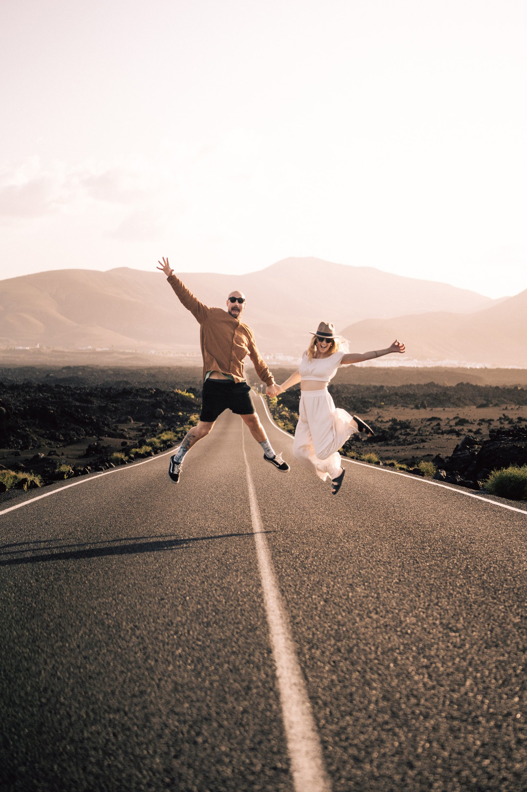

Inselwinter
Lena & Moritz · Winter 26/27
Drei Monate mit dem Van auf den Kanaren.

Wo wir gerade sind
Route abspielen
Ganze Route
Kanaren
● Bericht anklicken · durchgezogen: gefahren · gepunktet: geplant
Reiseberichte
Schließen
←
→